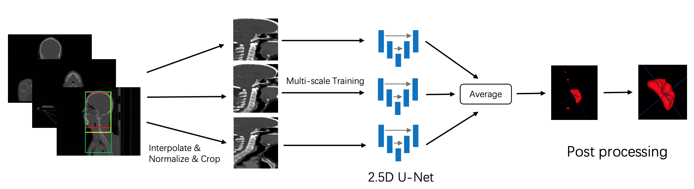

Zhengwentai SUN

I am Zhengwentai SUN (孙正文泰), a second-year MPhil student at Hong Kong Polytechnic University, supervised by Prof. Tracy Mok. I completed my Bachelor's degree at the University of Electronic Science and Technology of China. My current research focuses on generative models and their applications in the fashion domain.
Publications

|
Sun, Z., Zhou, Y., He, H., & Mok, P. Y. (2023). SGDiff: A Style-Guided Diffusion Model for Fashion Synthesis. Submitted to ACM Multimedia 2023. |

|
Sun, Z., Zhou, Y., He, H., & Mok, P. Y. (2023). CoDE-GAN: Content Decoupling and Enhancement GAN for Sketch-Controlled Flexible Fashion Editing. In Preparation for IEEE Transactions on Circuits and Systems for Video Technology. |
| Lei, W., Mei, H., Sun, Z., Ye, S., Gu, R., Wang, H., ... & Wang, G. (2021). Automatic segmentation of organs-at-risk from head-and-neck CT using separable convolutional neural network with hard-region-weighted loss. Neurocomputing, 442, 184-199. | |
|  | Mei, H., Lei, W., Gu, R., Ye, S., Sun, Z., Zhang, S., & Wang, G. (2021). Automatic segmentation of gross target volume of nasopharynx cancer using ensemble of multiscale deep neural networks with spatial attention. Neurocomputing, 438, 211-222. |
 Github
Github
 Arxiv
Arxiv
Experiences
- Teaching Assistant for ITC446XE - Mobile App Design for Fashion 2023
- Intern at Tencent LightSpeed Studio (光子工作室) 2021